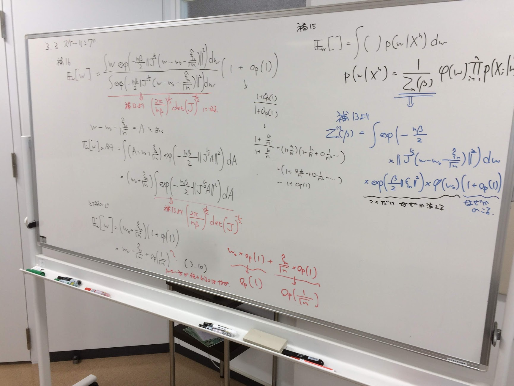
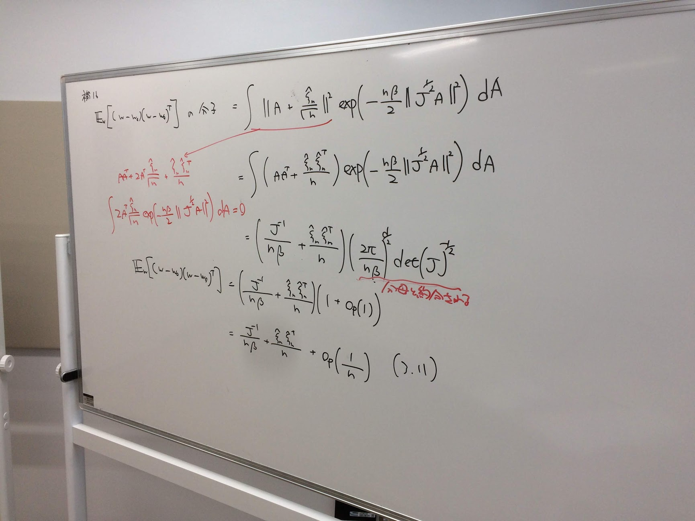
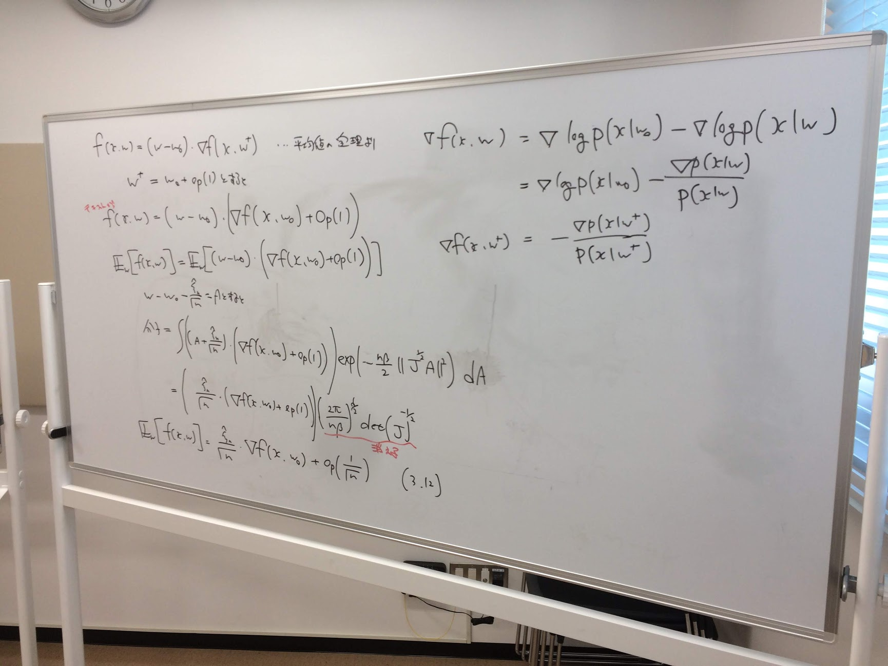
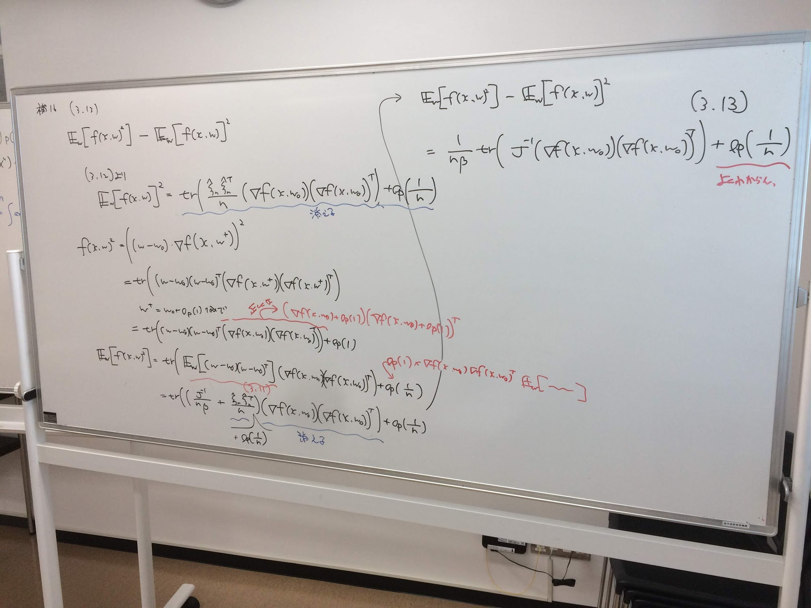

ベイズ統計の理論と方法 輪読会@沖縄 第19回¶
以下の式
\[ \begin{align}\begin{aligned}(a + b)^{2} &= a^{2} + 2 ab + b^{\pi} \cdot \mathbb{E}\left[\frac{1}{2}\right]\\(a + b)^{2} &= a^{2} + 2 ab + b^{\pi}\\(a )^{2} &= a^{2} + 2 ab + b^{\pi} \cdot \mathbb{E}\left[\frac{1}{2}\right]\end{aligned}\end{align} \]
から、導くことができる。



